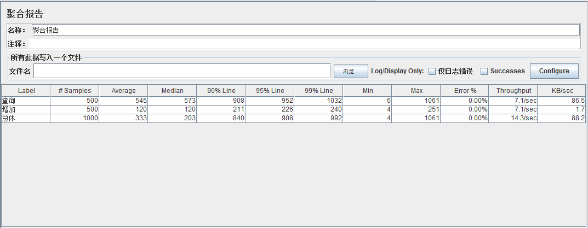
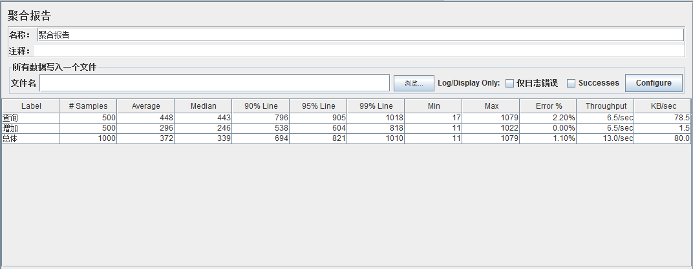

Feign 使用简介
Feign是一个声明式的web service客户端，它使得编写web service客户端更为容易。创建接口，为接口添加注解，即可使用Feign。Feign可以使用Feign注解或者 JAX-RS注解，还支持热插拔的编码器和解码器。Spring Cloud为Feign添加了 Spring MVC的注解支持，并整合了Ribbon和Eureka来为使用Feign时提供负载均 衡。
译自：http://cloud.spring.io/spring-cloud-static/Camden.SR3/#spring-cloud-feign
Feign示例
配置(基于oss-eureka服务以及todomvc-app服务)
1.pom增加如下
<dependency>
<groupId>org.springframework.cloud</groupId>
<artifactId>spring-cloud-starter-eureka</artifactId>
</dependency>
<dependency>
<groupId>org.springframework.cloud</groupId>
<artifactId>spring-cloud-starter-feign</artifactId>
</dependency>
<dependency>
<groupId>org.springframework.boot</groupId>
<artifactId>spring-boot-starter-actuator</artifactId>
</dependency>
2.创建启动类
/**
* 使用@EnableFeignClients开启Feign
*
* @author eacdy
*/
@SpringBootApplication
@EnableFeignClients
@EnableDiscoveryClient
public class FeignDemoApplication {
public static void main(String[] args) {
SpringApplication.run(MovieFeignApplication.class, args);
}
}
3.实体类
@Data
public class TodoModel implements Serializable {
private static final long serialVersionUID = -1;
private Long id;
private String title;
private Boolean completed;
}
4.Feign测试类：FeignDemoClient
/**
* 使用 @FeignClient("oss-todomvc-app")
* 注解绑定oss-todomvc-app服务，还可以使用url参数指定一个URL(具体指定url后就用不上ribbon了)
*
* 若使用https则可以 @FeignClient("https://oss-todomvc-app")
*/
// @FeignClient(name = "https://oss-todomvc-app")
@FeignClient(name = "oss-todomvc-app")
@RequestMapping("/api/todos")
public interface FeignDemoClient {
@RequestMapping(value = "/{id}", method = RequestMethod.GET)
TodoModel query(final @PathVariable("id") Long id);
@RequestMapping(method = RequestMethod.GET)
List<TodoModel> findAll();
@RequestMapping(value = "/{id}", method = RequestMethod.PUT)
void update(final @PathVariable("id") Long id, final @RequestBody TodoModel model);
@RequestMapping(method = RequestMethod.POST, consumes = MediaType.APPLICATION_JSON_VALUE,
produces = MediaType.APPLICATION_JSON_VALUE)
TodoModel add(final @RequestBody TodoModel model);
@RequestMapping(value = "/{id}", method = RequestMethod.DELETE)
void delete(final @PathVariable("id") Long id);
}
5.Feign的测试类：FeiDemoController.java
@RestController
@RequestMapping("/feign/api/todos")
public class FeiDemoController {
@Autowired
private FeignDemoClient feignDemoClient;
@RequestMapping(value = "/{id}", method = RequestMethod.GET)
public TodoModel query(final @PathVariable("id") Long id) {
return feignDemoClient.query(id);
}
@RequestMapping(method = RequestMethod.GET)
public List<TodoModel> findAll() {
return feignDemoClient.findAll();
}
@RequestMapping(value = "/{id}", method = RequestMethod.PUT)
public void update0(final @PathVariable("id") Long id, final @RequestBody TodoModel model) {
model.setId(id);
feignDemoClient.update(id, model);
}
@RequestMapping(method = RequestMethod.POST)
public TodoModel add(final @RequestBody TodoModel model) throws Throwable {
return feignDemoClient.add(model);
}
@RequestMapping(value = "/{id}", method = RequestMethod.DELETE)
public void delete(final @PathVariable("id") Long id) {
feignDemoClient.delete(id);
}
}
6.feign-demo.yml
server:
port: 9020
error:
includeStacktrace: ALWAYS
app.error.handlerEnabled: false
spring:
application:
name: oss-todomvc-app-feign
eureka:
client:
serviceUrl:
defaultZone: http://localhost:8761/eureka/
instance:
preferIpAddress: true
ribbon:
eureka:
enabled: true #默认为true。如果设置为false，Ribbon将不 会从Eureka中获得服务列表，而是使用静态配置的服务列表。静态服务列表可使用：< client>.ribbon.listOfServers来指定。参考：http://projects.spring.i o/spring-cloud/docs/1.0.3/spring-cloud.html#spring-cloud-ribbonwithout-eureka
7.运行 访问feigndemo项目即可得到和访问todomvc-app服务一样的结果
feign https方式的使用
1.在证书之类的配置没问题的情况下，可直接配置 @FeignClient("https://oss-todomvc-app")
2.证书相关配置见CONTRIBUTION
feign 的性能
1.在我本地台式机的测试情况如下
使用kmeter来进行测试，5个线程每个线程循环100次，每次有两个请求(查询和添加,查询数据会越来越大，添加数据不变）。
直接请求provider端

请求feiclient端

feign 相关研究
1.@FeignClient当url有值的时候直接按url去请求，不经过ribbon的负载均衡。name若是以http开头则不用修改（即可使用https）否则前面增加http://
FeignClientFactoryBean.getObject();
@Override
public Object getObject() throws Exception {
FeignContext context = applicationContext.getBean(FeignContext.class);
Feign.Builder builder = feign(context);
if (!StringUtils.hasText(this.url)) {
String url;
if (!this.name.startsWith("http")) {
url = "http://" + this.name;
}
else {
url = this.name;
}
url += cleanPath();
return loadBalance(builder, context, new HardCodedTarget<>(this.type,this.name, url));
}
if (StringUtils.hasText(this.url) && !this.url.startsWith("http")) {
this.url = "http://" + this.url;
}
String url = this.url + cleanPath();
return targeter.target(this, builder, context, new HardCodedTarget<>(this.type, this.name, url));
}
2.若使用了ribbon,会取一个client来实现http请求，默认是LoadBalancerFeignClient处理负载均衡
protected <T> T loadBalance(Feign.Builder builder, FeignContext context,HardCodedTarget<T> target) {
Client client = getOptional(context, Client.class);
if (client != null) {
builder.client(client);
return targeter.target(this, builder, context, target);
}
throw new IllegalStateException("No Feign Client for loadBalancing defined. Did you forget to include spring-cloud-starter-ribbon?");
}
3.LoadBalancerFeignClient需要一个真正处理请求的client默认是Client.Default
Feign在默认情况下使用的是JDK原生的URLConnection发送HTTP请求，没有连接池，但是对每个地址会保持一个长连接，即利用HTTP的persistence connection 。我们可以用Apache的HTTP Client替换Feign原始的http client, 从而获取连接池、超时时间等与性能息息相关的控制能力。Spring Cloud从Brixtion.SR5版本开始支持这种替换，首先在项目中声明Apache HTTP Client和feign-httpclient依赖：
<!-- 使用Apache HttpClient替换Feign原生httpclient -->
<dependency>
<groupId>org.apache.httpcomponents</groupId>
<artifactId>httpclient</artifactId>
</dependency>
<dependency>
<groupId>com.netflix.feign</groupId>
<artifactId>feign-httpclient</artifactId>
<version>${feign-httpclient}</version>
</dependency>
4.可配置的地方
spring提供了以下内容，可以替换
Decoder feignDecoder: ResponseEntityDecoder (which wraps a SpringDecoder)
Encoder feignEncoder: SpringEncoder
Logger feignLogger: Slf4jLogger
Contract feignContract: SpringMvcContract
Feign.Builder feignBuilder: HystrixFeign.Builder
spring 使用了feign默认的但是也可以自己定制
Logger.Level
Retryer
ErrorDecoder oss-errorhandle 提供了这个
Request.Options
Collection<RequestInterceptor>
feign 和 dubbo
> 在微服务架构中，服务的请求者以何种方式调用远程服务是一项必须要解决的问题。在Spring Cloud(Netflix)技术栈中，每个微服务是以HTTP REST接口的形式暴露的，这样在执行远程调用时，正常情况下需要使用一个HTTP客户端，然后向服务发起HTTP请求。实际上，如果使用Netflix的Feign作为Http Client的话，我们就可以做到像Dubbo一样，服务的调用者直接调用接口方法调用远程服务，而不需要通过常规的Http Client构造请求再解析返回数据。
> 正常情况下，应当由服务的调用者使用这个HTTP Client向远程服务发起请求，但是这样的坏处是调用者必须对远程服务的HTTP REST接口非常了解。这里可以变通一下，我们为每一个微服务创建一个API包，这个包中只有@FeignClient的声明，然后在服务的调用端通过maven引入该API包，这样调用者就无需关心实际的REST接口而是像调用本地方法一样调用远程服务了。
>
- 是一套完整的分布式系统解决方案，它的子项目涵盖了所有实现布式系统所需要的基础软件设施
- 基于Spring Boot, 使得开发部署极其简单(加依赖，加注解，就能运行了)
> 要说Dubbo，算是Spring Cloud的一个子集好了,大致相当于Spring Cloud里的 Eureka + Feign + 1/2Hystrix
> Dubbo 是阿里巴巴公司开源的一个高性能优秀的服务框架，使得应用可通过高性能的 RPC 实现服务的输出和输入功能，可以和 Spring框架无缝集成。 > 主要核心部件： > Remoting: 网络通信框架，实现了 sync-over-async 和 request-response 消息机制. > RPC: 一个远程过程调用的抽象，支持负载均衡、容灾和集群功能 > Registry: 服务目录框架用于服务的注册和服务事件发布和订阅
> 网上文章
个人观点 feign是spring cloud中一部分生态完整，spring团队实力靠谱，社区活跃度高，http协议，dubbo 高效，文档全，可二次开发（spi机制），能与spring无缝集成（dubbox支持rest）。
与errorhandle结合相关
- app.error.handlerEnabled: false
- app.error.includeStacktrace AWAYS ...
ribbon
> Ribbon是Netflix 发布的开源项目，主要功能是提供客户端的软件负载均衡算法，将Netflix的中间层服务连接在一起。Ribbon客户端组 件提供一系列完善的配置项如连接超时，重试等。简单的说，就是在配置文件中列出Load Balancer后面所有的机器，Ribbon会自动的帮助你基于某种规则（如简单轮询，随即连接等）去连接这些机器。我们也很容易使用Ribbon实现 自定义的负载均衡算法。
> Ribbon工作时分为两步：第一步先选择 Eureka Server, 它优先选择在同一个Zone 且负载较少的Server；第二步再根据用户指定的策略，在从Server取到的服务注册 列表中选择一个地址。其中Ribbon提供了三种策略：轮询、断路器和根据响应时间 加权
配置
1.增加pom(使用feign的话ribbon不用添加是自带的)
<dependency>
<groupId>org.springframework.cloud</groupId>
<artifactId>spring-cloud-starter-ribbon</artifactId>
</dependency>
2.通过@LoadBalanced注解开启均衡负载能力.(RestTemplate)
/**
* 实例化RestTemplate，通过@LoadBalanced注解开启均衡负载能力.
*
* @return restTemplate
*/
@Bean
@LoadBalanced
public RestTemplate restTemplate() {
return new RestTemplate();
}
3.编写服务类
@Service
public class RibbonDemoClient {
@Value("http://${ENV:development}-oss-todomvc-app")
private String todoServiceUrl;
@Autowired
private RestTemplate restTemplate;
@SuppressWarnings("unchecked")
public List<TodoModel> findByAll() { // http://服务提供者的serviceId/url
return this.restTemplate.getForObject(todoServiceUrl + "/api/todos", List.class);
}
}
4.编写controller略
5.自己实现路由规则等
- IClientConfig ribbonClientConfig: DefaultClientConfigImpl
- IRule ribbonRule: ZoneAvoidanceRule
- IPing ribbonPing: NoOpPing
- ServerList<Server> ribbonServerList: ConfigurationBasedServerList
- ServerListFilter<Server> ribbonServerListFilter: ZonePreferenceServerListFilter
- ILoadBalancer ribbonLoadBalancer: ZoneAwareLoadBalancer
举例
@Bean
public IRule ownRule() {
return new RandomRule();
}
Ribbon提供的主要负载均衡策略介绍
简单轮询负载均衡（RoundRobin）
以轮询的方式依次将请求调度不同的服务器，即每次调度执行i = (i + 1) mod n，并选出第i台服务器。
随机负载均衡 （Random）
随机选择状态为UP的Server
加权响应时间负载均衡 （WeightedResponseTime）
区域感知轮询负载均衡（ZoneAware）
区 域感知负载均衡内置电路跳闸逻辑，可被配置基于区域同源关系（Zone Affinity，也就是更倾向于选择发出调用的服务所在的托管区域内，这样可以降低延迟，节省成本）选择目标服务实例。它监控每个区域中运行实例的行 为，而且能够实时的快速丢弃一整个区域。这样在面对整个区域故障时，帮我们提升了弹性。
Ribbon自带负载均衡策略比较
| 策略名 | 策略声明 | 策略描述 | 实现说明 |
| BestAvailableRule | public class BestAvailableRule extends ClientConfigEnabledRoundRobinRule | 选择一个最小的并发请求的server | 逐个考察Server，如果Server被tripped了，则忽略，在选择其中ActiveRequestsCount最小的server |
| AvailabilityFilteringRule | public class AvailabilityFilteringRule extends PredicateBasedRule | 过滤掉那些因为一直连接失败的被标记为circuit tripped的后端server，并过滤掉那些高并发的的后端server（active connections 超过配置的阈值） | 使用一个AvailabilityPredicate来包含过滤server的逻辑，其实就就是检查status里记录的各个server的运行状态 |
| WeightedResponseTimeRule | public class WeightedResponseTimeRule extends RoundRobinRule | 根据相应时间分配一个weight，相应时间越长，weight越小，被选中的可能性越低。 | 一个后台线程定期的从status里面读取评价响应时间，为每个server计算一个weight。Weight的计算也比较简单responsetime 减去每个server自己平均的responsetime是server的权重。当刚开始运行，没有形成statas时，使用roubine策略选择 server。 |
| RetryRule | public class RetryRule extends AbstractLoadBalancerRule | 对选定的负载均衡策略机上重试机制。 | 在一个配置时间段内当选择server不成功，则一直尝试使用subRule的方式选择一个可用的server |
| RoundRobinRule | public class RoundRobinRule extends AbstractLoadBalancerRule | roundRobin方式轮询选择server | 轮询index，选择index对应位置的server |
| RandomRule | public class RandomRule extends AbstractLoadBalancerRule | 随机选择一个server | 在index上随机，选择index对应位置的server |
| ZoneAvoidanceRule | public class ZoneAvoidanceRule extends PredicateBasedRule | 复合判断server所在区域的性能和server的可用性选择server | 使 用ZoneAvoidancePredicate和AvailabilityPredicate来判断是否选择某个server，前一个判断判定一个 zone的运行性能是否可用，剔除不可用的zone（的所有server），AvailabilityPredicate用于过滤掉连接数过多的 Server。 |